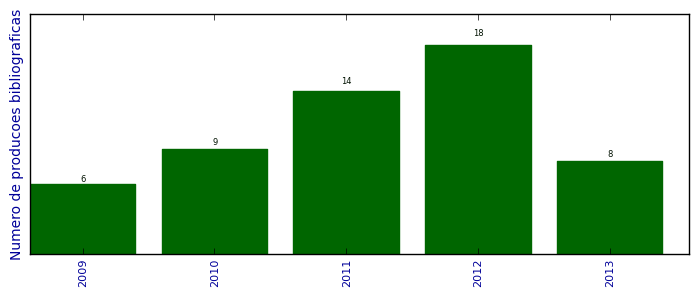

UFSM - Análise do Lattes
Total de produção bibliográfica

Número total de itens: 55
2013
| 1. | CASSALES, G. W. ; HOFFMANN, G. F. ; VIEIRA, J. C. ; CHARAO, A. S.. Paralelização híbrida de cálculo de probabilidades utilizando redes bayesianas. Em: XII Simpósio de Informática da Unifra (SIRC 2013), p. 26-31, 2013. [ citações Google Scholar | citações Microsoft Acadêmico | busca Google ] Qualis: Não identificado (XII Simpósio de Informática da Unifra (SIRC 2013)) |
| 2. | Gomes, V. C. F. ; Campos Velho, H. F. ; Campos Velho, H. F. ; CHARAO, A. S.. A fast Poisson solver for hybrid reconfigurable system. Lecture Notes in Computer Science. v. 7806, p. 46-58, 2013. [ citações Google Scholar | citações Microsoft Acadêmico | busca Google ] Qualis: Não identificado (Lecture Notes in Computer Science) |
| 3. | GOMES, V. C. F. ; VELHO, H. F. C. ; CHARAO, A. S.. A Fast Poisson Solver for Hybrid Reconfigurable System. Em: 9th International Symposium on Applied Reconfigurable Computing, p. 47-58, 2013. [ citações Google Scholar | citações Microsoft Acadêmico | busca Google ] Qualis: Não identificado (9th International Symposium on Applied Reconfigurable Computing) |
| 4. | MOURA, J. L. ; LUNARDI, G. M. ; CHARAO, A. S. ; BARCELOS, P. P. A. ; STEIN, B. O.. Gestão de Processos de Negócio em Curso de Sistemas de Informação: Relato de Experiência Utilizando Software Livre. Em: IX Simpósio Brasileiro de Sistemas de Informação (SBSI), p. 206-217, 2013. [ citações Google Scholar | citações Microsoft Acadêmico | busca Google ] Qualis: B4 (Simpósio Brasileiro de Sistemas de Informação) |
| 5. | RUIZ, R. S. R. ; VELHO, H. F. C. ; LESSA, L. S. ; CHARAO, A. S.. Turbulent Parameterization for CCATT-BRAMS by GPU. Ciência e Natura. v. 35, p. 196-198, 2013. [ citações Google Scholar | citações Microsoft Acadêmico | busca Google ] Qualis: Não identificado (Ciência e Natura) |
| 6. | STEFFENEL, LUIZ ANGELO ; FLAUZAC, OLIVIER ; CHARAO, ANDREA SCHWERTNER ; BARCELOS, PATRICIA PITTHAN ; STEIN, BENHUR ; NESMACHNOW, SERGIO ; PINHEIRO, MANUELE KIRSCH ; DIAZ, DANIEL. PER-MARE: Adaptive Deployment of MapReduce over Pervasive Grids. Em: 2013 Eighth International Conference on P2P, p. 17, 2013.  [ citações Google Scholar | citações Microsoft Acadêmico | busca Google ] Qualis: Não identificado (2013 Eighth International Conference on P2P) |
| 7. | STRECK, N. ; SILVA, M. R. ; ROSA, H. T. ; WALTER, L. C. ; BENEDETTI, R. P. ; CARLI, C. ; CHARAO, A. S. ; MARCOLIN, E. ; FERRAZ, S. ; MARCHESAN, E.. Acompanhamento da Safra 2012/2013 de Arroz Irrigado no RIo Grande do Sul por Modelagem Numérica. Ciência e Natura. v. 35, p. 368-372, 2013. [ citações Google Scholar | citações Microsoft Acadêmico | busca Google ] Qualis: Não identificado (Ciência e Natura) |
| 8. | VIEIRA, J. C. ; CASSALES, G. W. ; FAE, F. ; CHARAO, A. S.. Paralelização de Ray Tracing utilizando Intel Cilk Plus. Em: XII Simpósio de Informática da Unifra (SIRC 2013), p. 14-19, 2013. [ citações Google Scholar | citações Microsoft Acadêmico | busca Google ] Qualis: Não identificado (XII Simpósio de Informática da Unifra (SIRC 2013)) |
2012
| 1. | ALBIERO, F. W. ; STEIN, B. O. ; CHARAO, A. S.. Panorama sobre Técnicas de Escalonamento da Voltagem e da Frequência do Processador em Clusters e Grades. Em: ERAD 2012 - Fórum de Pós-Graduação, 2012, Erechim, RS. Anais ERAD 2012, 2012. [ citações Google Scholar | citações Microsoft Acadêmico | busca Google ] Qualis: Não identificado (ERAD 2012 - Fórum de Pós-Graduação, 2012, Erechim, RS. Anais ERAD 2012) |
| 2. | BARBOSA, F. P. ; CHARAO, A. S.. Impact of pay-as-you-go Cloud Platforms on Software Pricing and Development: A Review and Case Study. Em: ICCSA 2012 - 12th International Conference on Computational Science and Its Applications, v. 7336, p. 404-417, 2012. [ citações Google Scholar | citações Microsoft Acadêmico | busca Google ] Qualis: B1 (International Conference on Computational Science and its Applications) |
| 3. | BERNARDI, C. A. C. ; MADALOSSO, O. M. ; CHARAO, A. S.. Utilizando OpenCL para Acelerar um Modelo de Simulação Atmosférica. Em: 27ª Jornada Acadêmica Integrada, 2012, Santa Maria, RS. Anais 27ª Jornada Acadêmica Integrada, 2012. [ citações Google Scholar | citações Microsoft Acadêmico | busca Google ] Qualis: Não identificado (27ª Jornada Acadêmica Integrada, 2012, Santa Maria, RS. Anais 27ª Jornada Acadêmica Integrada) |
| 4. | BERNARDI, C. A. C. ; MADALOSSO, O. M. ; CHARAO, A. S. ; WINCK, A. T. ; MACHADO, K.. Análise de Profilers para Programas em Java: Estudo de Caso Aplicado ao Algoritmo M5P do Software Weka. Em: WSCAD-WIC 2012 / Simpósio em Sistemas Computacionais / Workshop de IC, 2012, Petrópolis, RJ. Anais WSCAD-WIC 2012, 2012. [ citações Google Scholar | citações Microsoft Acadêmico | busca Google ] Qualis: B4 (Simpósio em Sistemas Computacionais) |
| 5. | BORGES, D. P. ; SULZBACH, M. ; CHARAO, A. S. ; STEIN, B. O. ; MEDINA, R. D.. Ambiente de acesso seguro a nuvem privada: uma proposta voltada à rede da UNIPAMPA. Em: ERRC 2012 - Escola Regional de Redes de Computadores / Pós-Graduação, 2012, Pelotas, RS. Anais ERRC 2012, 2012. [ citações Google Scholar | citações Microsoft Acadêmico | busca Google ] Qualis: Não identificado (ERRC 2012 - Escola Regional de Redes de Computadores / Pós-Graduação, 2012, Pelotas, RS. Anais ERRC 2012) |
| 6. | CASSALES, G. W. ; CARDOZO, G. R. ; CHARAO, A. S.. Protótipo de Aplicativo Móvel em Plataforma Android para Controle de Frequência em Sala de Aula. Em: 27ª Jornada Acadêmica Integrada, 2012, Santa Maria, RS. Anais 27ª Jornada Acadêmica Integrada, 2012. [ citações Google Scholar | citações Microsoft Acadêmico | busca Google ] Qualis: Não identificado (27ª Jornada Acadêmica Integrada, 2012, Santa Maria, RS. Anais 27ª Jornada Acadêmica Integrada) |
| 7. | CHARAO, A. S.. Refatoração de software: ferramenta de apoio à paralelização de programas com OpenMP. 2012. Apresentação de Trabalho/Conferência ou palestra |
| 8. | GONDIM, E. M. ; BARCELOS, P. P. A. ; CHARAO, A. S.. Experiência de Injeção de Falhas no DataNode do Apache Hadoop. Em: ERAD 2012 - Sessão de Iniciação Científica, 2012, Erechim, RS. Anais ERAD 2012, 2012. [ citações Google Scholar | citações Microsoft Acadêmico | busca Google ] Qualis: Não identificado (ERAD 2012 - Sessão de Iniciação Científica, 2012, Erechim, RS. Anais ERAD 2012) |
| 9. | GONDIM, E. M. ; BARCELOS, P. P. A. ; CHARAO, A. S.. Explorando o Framework de Injeção de Falhas do Apache Hadoop. Em: WSCAD-WIC 2012 / Simpósio em Sistemas Computacionais / Workshop de IC, 2012, Petrópolis, RJ. Anais WSCAD-WIC 2012, 2012. [ citações Google Scholar | citações Microsoft Acadêmico | busca Google ] Qualis: B4 (Simpósio em Sistemas Computacionais) |
| 10. | LUNARDI, G. M. ; MOURA, J. L. ; CHARAO, A. S. ; CASSAL, M. L.. Desenvolvimento de Sistema para controle de ACG dos cursos de Sistemas de Informação e Ciência da Computação da UFSM: Integração à base de dados LDAP. Em: 27ª Jornada Acadêmica Integrada, 2012, Santa Maria, RS. Anais 27ª Jornada Acadêmica Integrada, 2012. [ citações Google Scholar | citações Microsoft Acadêmico | busca Google ] Qualis: Não identificado (27ª Jornada Acadêmica Integrada, 2012, Santa Maria, RS. Anais 27ª Jornada Acadêmica Integrada) |
| 11. | MOURA, J. L. ; LUNARDI, G. M. ; CHARAO, A. S. ; STEIN, B. O. ; BARCELOS, P. P. A.. Eliminando Papel no Registro de ACGs: uma Aplicação de Gerenciamento de Processos de Negócio nos Cursos de Ciência da Computação e Sistemas de Informação da UFSM. Em: 27ª Jornada Acadêmica Integrada, 2012, Santa Maria, RS. Anais 27ª Jornada Acadêmica Integrada, 2012. [ citações Google Scholar | citações Microsoft Acadêmico | busca Google ] Qualis: Não identificado (27ª Jornada Acadêmica Integrada, 2012, Santa Maria, RS. Anais 27ª Jornada Acadêmica Integrada) |
| 12. | NASCIMENTO FILHO, R. L. ; ALBIERO, F. W. ; CHARAO, A. S. ; STEIN, B. O.. Um Estudo sobre Configurações de Economia de Energia no Gerenciador de Recursos OAR. Em: ERAD 2012 - Sessão de Iniciação Científica, 2012, Erechim, RS. Anais ERAD 2012, 2012. [ citações Google Scholar | citações Microsoft Acadêmico | busca Google ] Qualis: Não identificado (ERAD 2012 - Sessão de Iniciação Científica, 2012, Erechim, RS. Anais ERAD 2012) |
| 13. | NASCIMENTO FILHO, R. L. ; CHARAO, A. S.. Adicionando Variáveis a um Tipo Derivado: Refatoração no Photran. Em: ERAD 2012 - Sessão de Iniciação Científica, 2012, Erechim, RS. Anais ERAD 2012, 2012. [ citações Google Scholar | citações Microsoft Acadêmico | busca Google ] Qualis: Não identificado (ERAD 2012 - Sessão de Iniciação Científica, 2012, Erechim, RS. Anais ERAD 2012) |
| 14. | RISSETTI, G. ; CHARAO, A. S. ; PIVETA, E. K.. Catálogo de Refatorações para a Evolução de Programas em Linguagem Fortran. Em: ERAD 2012 - Fórum de Pós-Graduação, 2012, Erechim, RS. Anais ERAD 2012, 2012. [ citações Google Scholar | citações Microsoft Acadêmico | busca Google ] Qualis: Não identificado (ERAD 2012 - Fórum de Pós-Graduação, 2012, Erechim, RS. Anais ERAD 2012) |
| 15. | SCHEID, E. J. ; CHARAO, A. S. ; STEIN, B. O.. Explorando a Google Provisioning API para gerenciamento automático de grupos de discussão na rede da Informática/UFSM. Em: 27ª Jornada Acadêmica Integrada, 2012, Santa Maria, RS. Anais 27ª Jornada Acadêmica Integrada, 2012. [ citações Google Scholar | citações Microsoft Acadêmico | busca Google ] Qualis: Não identificado (27ª Jornada Acadêmica Integrada, 2012, Santa Maria, RS. Anais 27ª Jornada Acadêmica Integrada) |
| 16. | SCHEID, E. J. ; MINATO, L. H. ; STEIN, B. O. ; CHARAO, A. S.. Computação em Nuvem com Google Apps for Education: o Caso do Núcleo de Ciência da Computação da Universidade Federal de Santa Maria. Em: ERRC 2012 - Escola Regional de Redes de Computadores / Iniciação Científica, 2012, Pelotas, RS. Anais ERRC 2012, 2012. [ citações Google Scholar | citações Microsoft Acadêmico | busca Google ] Qualis: Não identificado (ERRC 2012 - Escola Regional de Redes de Computadores / Iniciação Científica, 2012, Pelotas, RS. Anais ERRC 2012) |
| 17. | TIETZMANN, D. K. ; CHARAO, A. S.. Análise automática de acessos concorrentes a dados para refatoração de código sequencial em código paralelo OpenMP. Em: ERAD 2012 - Fórum de Pós-Graduação, 2012, Erechim, RS. Anais ERAD 2012, 2012. [ citações Google Scholar | citações Microsoft Acadêmico | busca Google ] Qualis: Não identificado (ERAD 2012 - Fórum de Pós-Graduação, 2012, Erechim, RS. Anais ERAD 2012) |
| 18. | TIETZMANN, D. K. ; CHARAO, A. S. ; BEAL JUNIOR, J. C.. Uma extensão do Eclipse para auxiliar na refatoração de código sequencial em código paralelo com OpenMP. Em: Workshop de Software Livre, 2012. [ citações Google Scholar | citações Microsoft Acadêmico | busca Google ] Qualis: Não identificado (Workshop de Software Livre) |
2011
| 1. | BARBOSA, F. P. ; CHARAO, A. S.. Uma análise do impacto das plataformas pay-as-you-go de computação em nuvem na construção e precificação de software. Em: CLEI 2011 - Conferencia Latinoamericana de Informática, 2011. [ citações Google Scholar | citações Microsoft Acadêmico | busca Google ] Qualis: B4 (Conferencia Latinoamericana de Informática) |
| 2. | BONIATI, B. B. ; CHARAO, A. S. ; STEIN, B. O. ; RISSETTI, G. ; PIVETA, E. K.. Automated Refactorings for High Performance Fortran Programmes. International Journal of High Performance Systems Architecture (Print). v. 3, p. 98-109, 2011. [ citações Google Scholar | citações Microsoft Acadêmico | busca Google ] Qualis: B2 |
| 3. | CONTI, F. ; CHARAO, A. S.. Análise de Prazos de Entrega de Atividades no Moodle: um Estudo de Caso Utilizando Mineração de Dados. RENOTE. Revista Novas Tecnologias na Educação. v. 9, p. 1-10, 2011. [ citações Google Scholar | citações Microsoft Acadêmico | busca Google ] Qualis: B5 |
| 4. | GONDIM, E. M. ; BARCELOS, P. P. A. ; PRATES, B. P. ; CHARAO, A. S.. Análise dos Mecanismos de Tolerância a Falhas do Framework Apache Hadoop para Computação Distribuída. Em: 26a Jornada Acadêmica Integrada (JAI), 2011, Santa Maria, RS. Anais da 26a Jornada Acadêmica Integrada (JAI). Santa Maria, RS: Universidade Federal de Santa Maria, 2011. [ citações Google Scholar | citações Microsoft Acadêmico | busca Google ] Qualis: Não identificado (26a Jornada Acadêmica Integrada (JAI), 2011, Santa Maria, RS. Anais da 26a Jornada Acadêmica Integrada (JAI). Santa Maria, RS: Universidade Federal de Santa Maria) |
| 5. | GONDIM, E. M. ; PRATES, B. P. ; BARCELOS, P. P. A. ; CHARAO, A. S.. Análise de Alternativas para Injeção de Falhas no Apache Hadoop. Em: WSCAD-WIC 2011 - Workshop de Iniciação Científica do XII Simpósio em Sistemas Computacionais de Alto Desempenho, 2011, Vitória, ES. Anais do WSCAD-SSC 2011 - XII Simpósio em Sistemas Computacionais de Alto Desempenho, 2011. [ citações Google Scholar | citações Microsoft Acadêmico | busca Google ] Qualis: B4 (Simpósio em Sistemas Computacionais) |
| 6. | LUNARDI, G. M. ; BARCELOS, P. P. A. ; CHARAO, A. S.. Avaliação do Desempenho de um Algoritmo de Mineração de Dados do Pacote Estatístico R. Em: XI Escola Regional de Alto Desempenho (ERAD 2011), 2011, Porto Alegre, RS. Anais da XI Escola Regional de Alto Desempenho (ERAD 2011). Porto Alegre, RS, 2011. [ citações Google Scholar | citações Microsoft Acadêmico | busca Google ] Qualis: B5 (Escola Regional de Alto Desempenho) |
| 7. | NASCIMENTO FILHO, R. L. ; CHARAO, A. S.. Economia de Energia no Gerenciamento de Recursos Computacionais: um Estudo de Caso com Green OAR. Em: 26a Jornada Acadêmica Integrada (JAI), 2011, Santa Maria, RS. Anais da 26a Jornada Acadêmica Integrada (JAI). Santa Maria, RS: Universidade Federal de Santa Maria, 2011. [ citações Google Scholar | citações Microsoft Acadêmico | busca Google ] Qualis: Não identificado (26a Jornada Acadêmica Integrada (JAI), 2011, Santa Maria, RS. Anais da 26a Jornada Acadêmica Integrada (JAI). Santa Maria, RS: Universidade Federal de Santa Maria) |
| 8. | PEREIRA, A. ; CHARAO, A. S. ; ROSE, C. A. F.. Análise de Desempenho da Ferramenta Apache Mahout para Mineração de Dados Distribuída. Em: XI Escola Regional de Alto Desempenho (ERAD 2011), 2011, Porto Alegre, RS. Anais da XI Escola Regional de Alto Desempenho (ERAD 2011). Porto Alegre, RS, 2011. [ citações Google Scholar | citações Microsoft Acadêmico | busca Google ] Qualis: B5 (Escola Regional de Alto Desempenho) |
| 9. | PINTO, V. G. ; CHARAO, A. S. ; ROSE, C. A.. Experimentos de Mineração de Dados Paralela e Distribuída com Grid Weka. Em: XI Escola Regional de Alto Desempenho (ERAD 2011), 2011, Porto Alegre, RS. Anais da XI Escola Regional de Alto Desempenho (ERAD 2011). Porto Alegre, RS, 2011. [ citações Google Scholar | citações Microsoft Acadêmico | busca Google ] Qualis: B5 (Escola Regional de Alto Desempenho) |
| 10. | RUIZ, R. S. R. ; VELHO, H. F. C. ; CARETTA, C. A. ; SOUTO, R. P. ; CHARAO, A. S.. Grid environment for turbulent dynamics in cosmology. Journal of Computational Interdisciplinary Sciences. v. 2, p. 1-6, 2011. [ citações Google Scholar | citações Microsoft Acadêmico | busca Google ] Qualis: B5 |
| 11. | RUSSI, D. F. ; CHARAO, A. S.. Ambientes de Desenvolvimento Integrado no Apoio ao Ensino da Linguagem de Programação Haskell. RENOTE. Revista Novas Tecnologias na Educação. v. 9, p. 1-10, 2011. [ citações Google Scholar | citações Microsoft Acadêmico | busca Google ] Qualis: B5 |
| 12. | RUSSI, D. F. ; CHARAO, A. S.. Análise Comparativa de Ambientes Integrados de Desenvolvimento para a Linguagem Haskell. Em: 26a Jornada Acadêmica Integrada (JAI), 2011, Santa Maria, RS. Anais da 26a Jornada Acadêmica Integrada (JAI). Santa Maria, RS: Universidade Federal de Santa Maria, 2011. [ citações Google Scholar | citações Microsoft Acadêmico | busca Google ] Qualis: Não identificado (26a Jornada Acadêmica Integrada (JAI), 2011, Santa Maria, RS. Anais da 26a Jornada Acadêmica Integrada (JAI). Santa Maria, RS: Universidade Federal de Santa Maria) |
| 13. | TIETZMANN, D. K. ; CHARAO, A. S.. Refatorando laços de repetição em programas Fortran de alto desempenho. Em: XI Escola Regional de Alto Desempenho (ERAD 2011), 2011, Porto Alegre, RS. Anais da XI Escola Regional de Alto Desempenho (ERAD 2011). Porto Alegre, RS, 2011. [ citações Google Scholar | citações Microsoft Acadêmico | busca Google ] Qualis: B5 (Escola Regional de Alto Desempenho) |
| 14. | TIETZMANN, D. K. ; RISSETTI, G. ; CHARAO, A. S. ; PIVETA, E. K. ; PETRY, A. ; SOUZA, J. R.. Refatorações para Melhoria da Legibilidade de Código Fortran. Em: WSL'11 - Workshop de Software Livre, 2011. [ citações Google Scholar | citações Microsoft Acadêmico | busca Google ] Qualis: Não identificado (WSL'11 - Workshop de Software Livre) |
2010
| 1. | BARBOSA, F. P. ; CHARAO, A. S.. Uma Comparação entre os Principais Frameworks de Plataformas como Serviço em Cloud Computing. Em: X Escola Regional de Alto Desempenho (ERAD 2010), 2010, Passo Fundo, RS. Anais da X Escola Regional de Alto Desempenho (ERAD 2010). Passo Fundo, RS, 2010. [ citações Google Scholar | citações Microsoft Acadêmico | busca Google ] Qualis: B5 (Escola Regional de Alto Desempenho) |
| 2. | BONIATI, B. B. ; RISSETTI, G. ; CHARAO, A. S. ; PIVETA, E. K.. Extensões para Refatoração de Código Fortran no Eclipse. Em: Workshop de Software Livre, p. 74-79, 2010. [ citações Google Scholar | citações Microsoft Acadêmico | busca Google ] Qualis: Não identificado (Workshop de Software Livre) |
| 3. | CARISSIMI, A. S. ; GEYER, C. F. R. ; MAILLARD, N. B. ; NAVAUX, P. O. A. ; CAVALHEIRO, G. G. H. ; PILLA, M. L. ; YAMIN, A. ; CHARAO, A. S. ; STEIN, B. O. ; ROSE, C. A. ; FERNANDES, G. ; FERRETO, T. ; ZORZO, A.. Energy-Aware Scheduling of Parallel Programs. Em: Conferencia Latino Americana de Computación de Alto Rendimiento, p. 95-108, 2010. [ citações Google Scholar | citações Microsoft Acadêmico | busca Google ] Qualis: Não identificado (Conferencia Latino Americana de Computación de Alto Rendimiento) |
| 4. | FRUH, L. G. ; CHARAO, A. S.. Geração Automatizada de Portais Web para Grades Computacionais. Em: X Escola Regional de Alto Desempenho (ERAD 2010), 2010, Passo Fundo, RS. Anais da X Escola Regional de Alto Desempenho (ERAD 2010). Passo Fundo, RS, 2010. [ citações Google Scholar | citações Microsoft Acadêmico | busca Google ] Qualis: B5 (Escola Regional de Alto Desempenho) |
| 5. | GOMES, V. C. F. ; CHARAO, A. S. ; VELHO, H. F. C. ; CALEGARO, B. C.. Uma arquitetura de Hashing SHA-2 com alto throughput para sistema híbrido reconfigurável. Em: X Escola Regional de Alto Desempenho (ERAD 2010), 2010, Passo Fundo, RS. Anais da X Escola Regional de Alto Desempenho (ERAD 2010). Passo Fundo, RS, 2010. [ citações Google Scholar | citações Microsoft Acadêmico | busca Google ] Qualis: B5 (Escola Regional de Alto Desempenho) |
| 6. | PEREIRA, A. ; PINTO, V. G. ; CHARAO, A. S.. CertificaPET: Sistema Gerenciador de Certificados de Eventos em Formato Digital. Em: Workshop de Software Livre, p. 94-99, 2010. [ citações Google Scholar | citações Microsoft Acadêmico | busca Google ] Qualis: Não identificado (Workshop de Software Livre) |
| 7. | RISSETTI, G. ; CHARAO, A. S. ; BONIATI, B. B.. Incorporação de novas refatorações para linguagem Fortran no IDE Eclipse. Em: X Escola Regional de Alto Desempenho (ERAD 2010), 2010, Passo Fundo, RS. Anais da X Escola Regional de Alto Desempenho (ERAD 2010). Passo Fundo, RS, 2010. [ citações Google Scholar | citações Microsoft Acadêmico | busca Google ] Qualis: B5 (Escola Regional de Alto Desempenho) |
| 8. | SOUTO, R. P. ; VELHO, H. F. C. ; PAES, F. F. ; STEPHANY, S. ; NAVAUX, P. O. A. ; CHARAO, A. S. ; VIZZOTTO, J. K.. Grid Computing for Multi-spectral Tomografic Reconstruction of Chlorophyll Concentration in Ocean Water. Em: C. Constanda; M. E. Pérez. (Org.). Integral Methods in Science and Engineering. Boston. : Birkhäuser. 2010.v. 2, p. 327-337. [ citações Google Scholar | citações Microsoft Acadêmico | busca Google ] |
| 9. | VIZZOTTO, J. K. ; CHARAO, A. S. ; SOUTO, R. P. ; VELHO, H. F. C.. Aplicações de Grades Computacionais: Estudos de Caso em Meteorologia e Hidrologia. 10. Escola Regional de Alto Desempenho. Porto Alegre. Em: . : SBC/UCPEL/UPF/UNIJUÍ. 2010.p. 51-82. [ citações Google Scholar | citações Microsoft Acadêmico | busca Google ] |
2009
| 1. | BONIATI, B. B. ; CHARAO, A. S. ; STEIN, B. O.. Automação de Refatorações para Programas Fortran de Alto Desempenho. Em: Simpósio de Sistemas Computacionais de Alto Desempenho - WSCAD-SSC, 2009. [ citações Google Scholar | citações Microsoft Acadêmico | busca Google ] Qualis: Não identificado (Simpósio de Sistemas Computacionais de Alto Desempenho - WSCAD-SSC) |
| 2. | CHARAO, A. S. (Org.) ; COSTA, C. M. (Org.) ; VIANA, F. (Org.) ; BRANCO, M. D. (Org.) ; ATZ, M. C. (Org.) ; FRITSCH, R. (Org.) ; FERREIRA, V. S. (Org.). Anais do X Workshop de Software Livre - WSL 2009 / 10o Fórum Internacional de Software Livre - FISL 2009. Porto Alegre: Sociedade Brasileira de Computação. 2009. v. 1. 172p , . [ citações Google Scholar | citações Microsoft Acadêmico | busca Google ] |
| 3. | KOSLOVSKI, G. P. ; PRIMET, P. V. ; CHARAO, A. S.. VXDL: Virtual Resources and Interconnection Networks Description Language. Em: P. V.-B. Primet,;T. Kudoh; J. Mambretti. (Org.). Networks for Grid Applications. Lecture Notes of the Institute for Computer Sciences, Social Informatics and Telecommunications Engineering. Berlin Heidelberg. : Springer. 2009.v. 2, p. 138-154. [ citações Google Scholar | citações Microsoft Acadêmico | busca Google ] |
| 4. | KREUTZ, D. L. ; CHARAO, A. S.. FlexVAPs: a system for managing virtual appliances for heterogeneous virtualized environments. Em: IEEE/IFIP 6th Latin American Network Operations and Management Symposium, p. 1-12, 2009. [ citações Google Scholar | citações Microsoft Acadêmico | busca Google ] Qualis: B4 (Latin American Network Operations and Management Symposium) |
| 5. | PEREIRA, A. ; COGO, V. V. ; CHARAO, A. S.. Frameworks para Desenvolvimento Rápido de Aplicações Web: um Estudo de Caso com CakePHP e Django. Em: Workshop de Software Livre, 2009. [ citações Google Scholar | citações Microsoft Acadêmico | busca Google ] Qualis: Não identificado (Workshop de Software Livre) |
| 6. | SOUTO, R. P. ; PAES, F. F. ; VELHO, H. F. C. ; STEPHANY, S. ; PRETO, A. J. ; CHARAO, A. S. ; VIZZOTTO, J. K. ; NAVAUX, P. O. A. ; MAILLARD, N. B.. Method for multi-spectral tomographic reconstruction of chlorophyll concentration for ocean water. Em: XIV Simpósio Brasileiro de Sensoriamento Remoto (XIV SBSR), p. 6665-6672, 2009. [ citações Google Scholar | citações Microsoft Acadêmico | busca Google ] Qualis: Não identificado (XIV Simpósio Brasileiro de Sensoriamento Remoto (XIV SBSR)) |
(*) Relatório criado com produções desde 2009 até HOJE
Data de processamento: 11/04/2014 11:17:23